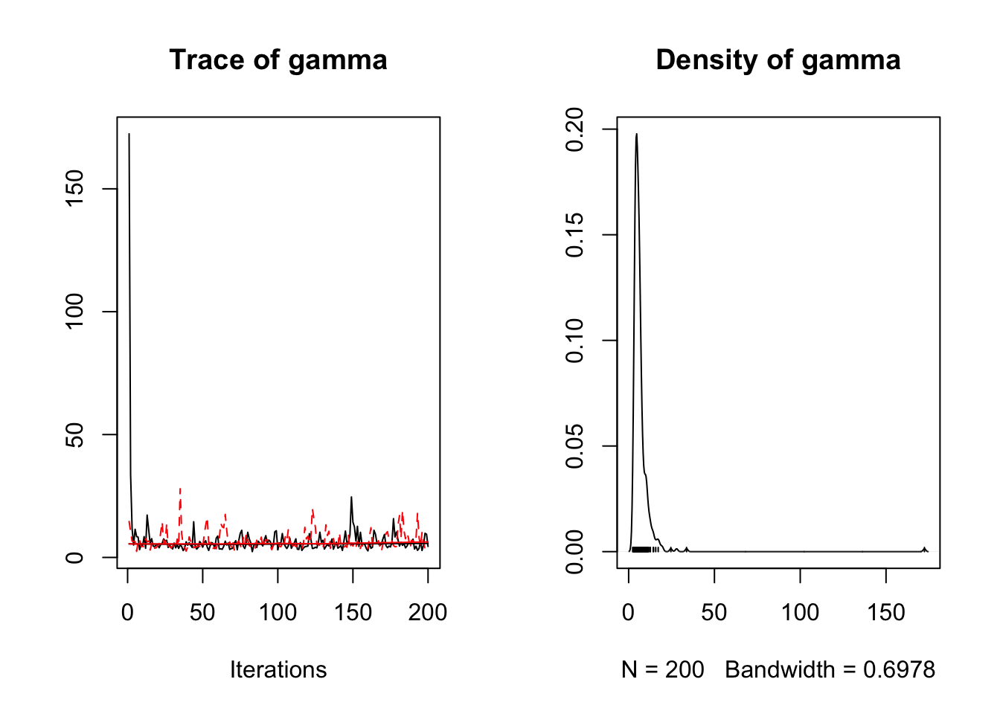

mcmcr
Introduction
mcmcr is an R package to manipulate Monte Carlo Markov Chain (MCMC) samples.
For the purposes of this discussion, an MCMC sample represents the value of a term from a single iteration of a single chain (of a single analysis). And while a simple parameter such as an intercept corresponds to a single term, more complex parameters such as an interaction between two factors consist of multiple terms with their own inherent dimensionality - in this case a matrix. Not surprisingly a set of MCMC samples can be stored in different ways. The three most common S3 classes store MCMC samples as follows:
-
coda::mcmcstores the MCMC samples from a single chain as a matrix where each each row represents an iteration and each column represents a variable -
coda::mcmc.liststores multiplemcmcobjects (with identical dimensions) as a list where each object represents a parallel chain -
rjags::mcarraystores the samples from multiple parallel chains as an array where the first dimension is variables, the second dimension is the iterations and the third dimension is the chains.
In all threes cases the terms/parameters are represented by a single dimension which means that the dimensionality inherent in the parameters is stored in the labelling of the variables, ie, "bIntercept", "bInteraction[1,2]", "bInteraction[2,1]", .... The structure of the mcmc and mcmc.list objects emphasizes the time-series nature of MCMC samples and is optimized for thining. According to the documentation the mcarray preserve the dimensions of the original node array defined in a JAGS model.
The mcmcr packages introduces two related S3 classes which preserve the dimensionality of the parameters:
-
mcmcr::mcmcarraystores the samples for a single parameter from one or more chains where the first dimension is the chains, the second dimension is iterations and the subsequent dimensions represent the dimensionality of the parameter; -
mcmcr::mcmcrstores the samples for multiple uniquely named parameters with the same number of chains and iterations.
The mcmcr package also introduces a third S3 class, mcmcr::mcmcrs, which stores multiple mcmcr objects representing individual analyses.
Why mcmcr?
The mcmcarray, mcmcr and mcmcrs classes were designed to be easy to manipulate. As a result, the mcmcr package introduces a variety of generic classes to:
-
subsetindividual objects by chains, iterations or parameters; -
collapseorsplitan object’s chains; -
bindmultiple objects by their parameters, chains, iterations or terms; -
combinemultiple objects by summing or otherwise combining their values; -
mcmc_mapover an objects values; - assess if an object has
convergedusingrhatandesr(effectively sampling rate); - and of course
coef,coerce,print,plotetc said objects.
Finally, the mcmcr package allows the user to readily derive an mcmcr object of new parameters (with potentially novel dimensionality) from an existing mcmc object by using standard R code to define the relationship between the ‘primary’ parameters in the existing object and the ‘derived’ parameters in the created object (and any other values specified by the user). No more rerunning a model because you forget to include a derived parameter!
Demonstration
library(mcmcr)
mcmcr <- mcmcr:::mcmcr
mcmcr
#> $alpha
#> [1] 2.998247 3.998247
#> nchains: 2
#> niters: 1000
#>
#> $beta
#> [,1] [,2]
#> [1,] 1.265929 1.33237
#> [2,] 2.265929 2.33237
#> nchains: 2
#> niters: 1000
#>
#> $sigma
#> [1] 0.8265352
#> nchains: 2
#> niters: 1000
parameters(mcmcr)
#> [1] "alpha" "beta" "sigma"
nchains(mcmcr)
#> [1] 2
niters(mcmcr)
#> [1] 1000
nterms(mcmcr)
#> [1] 7
coef(mcmcr)
#> # A tibble: 7 x 7
#> term estimate sd zscore lower upper pvalue
#> * <S3: term> <dbl> <dbl> <dbl> <dbl> <dbl> <dbl>
#> 1 alpha[1] 3.00 0.520 5.78 2.01 4.00 0.00100
#> 2 alpha[2] 4.00 0.520 7.70 3.01 5.00 0.000500
#> 3 beta[1,1] 1.27 0.622 2.05 0.160 2.33 0.0230
#> 4 beta[2,1] 2.27 0.622 3.66 1.16 3.33 0.00100
#> 5 beta[1,2] 1.33 0.619 2.12 0.277 2.40 0.0150
#> 6 beta[2,2] 2.33 0.619 3.74 1.28 3.40 0.00200
#> 7 sigma 0.827 0.664 1.52 0.424 2.73 0.000500
rhat(mcmcr, by = "term")
#> $alpha
#> [1] 1 1
#>
#> $beta
#> [,1] [,2]
#> [1,] 1.85 1.87
#> [2,] 1.85 1.87
#>
#> $sigma
#> [1] 1
esr(mcmcr)
#> [1] 0
converged(mcmcr)
#> [1] FALSE
plot(mcmcr[["alpha"]])

Installation
To install the latest version from GitHub
# install.packages("devtools")
devtools::install_github("poissonconsulting/mcmcr")Citation
To cite package 'mcmcr' in publications use:
Joe Thorley (2018). mcmcr: Manipulate Monte Carlo Markov Chain
Samples. R package version 0.0.0.9040.
A BibTeX entry for LaTeX users is
@Manual{,
title = {mcmcr: Manipulate Monte Carlo Markov Chain Samples},
author = {Joe Thorley},
year = {2018},
note = {R package version 0.0.0.9040},
}Contribution
Please report any issues.
Pull requests are always welcome.
Please note that this project is released with a Contributor Code of Conduct. By participating in this project you agree to abide by its terms.